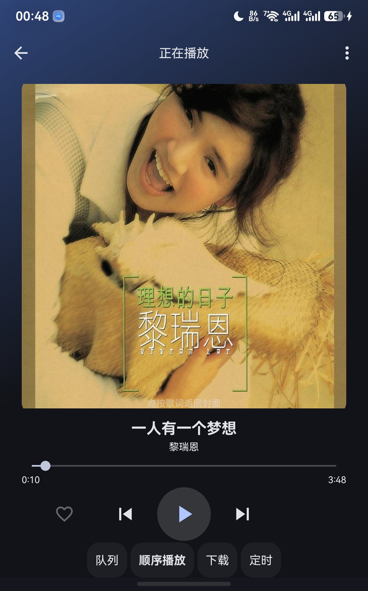
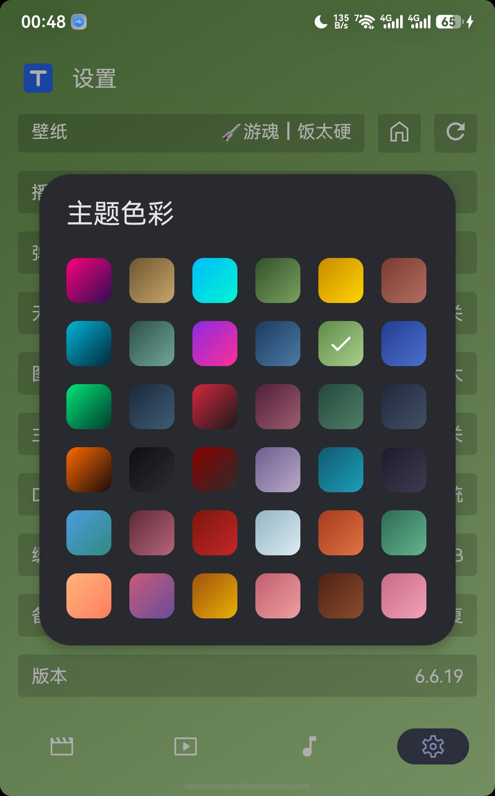

Android · GPL-3.0 · FongMi/TV 二次开发
MTBOX安卓视频与本地音乐播放工具箱
基于开源的 FongMi/TV（GPL-3.0）二次开发，包名 com.matou.mtbox，当前版本
6.6.19。整包源码连同音乐引擎与构建脚本已按 GPL-3.0 开源，本地解码、离线可用，
不绑定任何云端账号。
# 1) 资源 id 会漂移，每次都得重生成 R.java powershell -File javainject\genr.ps1 -Apk app.apk # 2) 编译 + 注入 + 签名（apktool 跑两遍） powershell -File javainject\build.ps1 -Tag music → mtbox-music-signed.apk
这是什么
两半拼起来的整包
反编译基线（FongMi/TV 5.6.1 → com.matou.mtbox 6.6.19）加上逐条 smali 补丁， 中间靠 apktool 跑两遍把资源 id 钉住。
音乐引擎直接注入
13 个手写 Java 文件走 javac + d8 出 classes4.dex，丢进 work_fong/unknown 随 apktool 原样打进包，不回编 smali。
音效链路透明
只有 Equalizer + BassBoost，禁用 LoudnessEnhancer；1.0 倍速不碰 setPlaybackParams，无损源走原生直通。
它能做什么
下面每一条都在已发布的安装包里。
覆盖非鸿蒙设备
安卓端独立打包，和 TTBOX 互补 —— 家里那台安卓投影或旧平板也能用。
自持签名
用自己保管的 keystore 出签名包，安装前可校验，不走第三方重签名。
本地导入即用
不绑定云端账号，本地资源导入就播，断网也能用。
已开源 GPL-3.0
整包源码连同音乐引擎与构建脚本一并上 GitHub，基底 FongMi/TV 本身也是 GPL-3.0。
音效链路直通
只保留 Equalizer + BassBoost，不启用 LoudnessEnhancer；1.0 倍速不碰 setPlaybackParams，无损源走原生直通。
跑起来是什么样


整包怎么拼起来的
两半：反编译基线，加上注入进去的音乐引擎，中间靠 apktool 跑两遍把资源 id 钉住。
work_fong 基线
FongMi/TV 5.6.1 反编译，包名改成 com.matou.mtbox，版本抬到 6.6.19（versionCode 60619）。
smali 补丁
主题统一、版本显示、全屏旋转、安全加固都落在 smali 上，每一条都留了方案记录。
javainject 音乐引擎
13 个手写 Java 文件走 javac + d8 出 classes4.dex，丢进 work_fong/unknown 随 apktool 原样打进包。
R.java 重生成
genr.ps1 用 public.xml 加 aapt2 dump 拼资源 id 表。资源一动 id 就整表漂移，所以必须两遍出包。
unknown 装载
apktool 会把 work_fong/unknown 下的文件原样复制进 APK，ART 把 classes 1 到 4.dex 一起加载。
签名
apksigner 签 v2/v3 并 verify，keystore 自己保管，不进仓库。
本地怎么出包
四步，顺序不能反。
- 01
生成 R.java
powershell -File javainject/genr.ps1 -Apk <刚构建的.apk>，资源 id 会漂移，每次都得重跑。
- 02
配签名口令
设 MTBOX_KS_PASS 与 MTBOX_KEY_PASS 两个环境变量，keystore 需要自己生成。
- 03
出包
powershell -File javainject/build.ps1 -Tag music，apktool 跑两遍，不要跳 pass 1。
- 04
校验
apksigner verify 通过、R.java 里 tabSongs 与 musicList 这些 id 对得上，才算成功。
常见问题
为什么 apktool 要跑两遍？
音乐引擎为什么不走 smali？
音效开了会不会失真？
锁屏和车机能控制吗？
为什么没有内置源？
免责声明
- 本项目基于开源的 FongMi/TV（GPL-3.0）二次开发，整包源码与第三方授权声明见 GitHub 仓库。
- 本项目不包含任何内容源，也不提供任何在线解析地址；所有外部订阅源与频道由使用者自行配置，与本项目无关。
- 本项目不提供任何商业服务，不收取任何费用、不构成任何交易关系，仅供个人学习与技术研究使用。
- 使用前请遵守当地法律法规；因使用本软件产生的任何后果由使用者自行承担，与作者无关。
- 上游第三方组件（迅雷 SDK、ForceTV、mpv、FFmpeg 等）仍适用各自许可证，重新分发前请自行核实授权条款。
- 本站只放技术与实现细节，不涉及任何交易；爱发电是作品支持渠道，与 APK 分发无关。